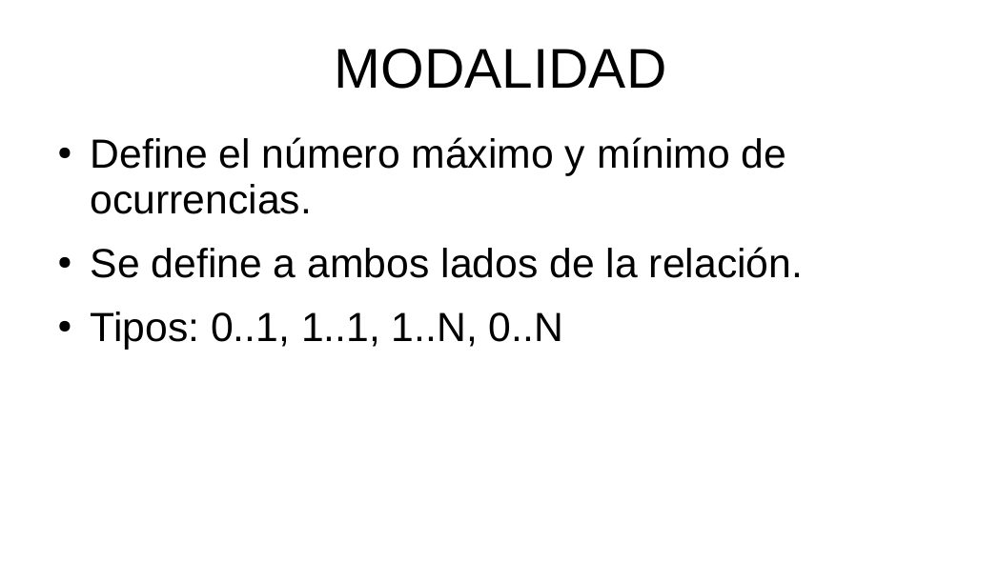
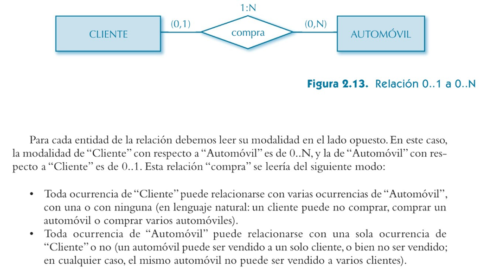
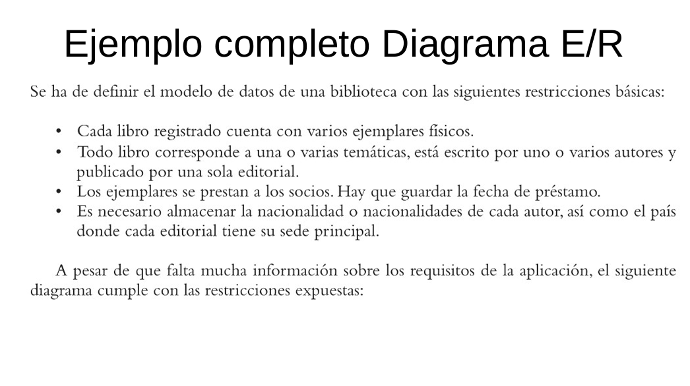
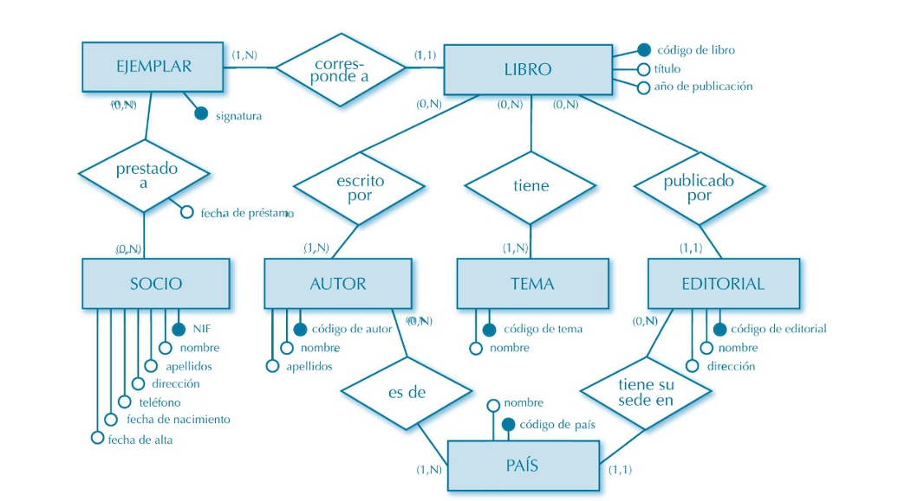
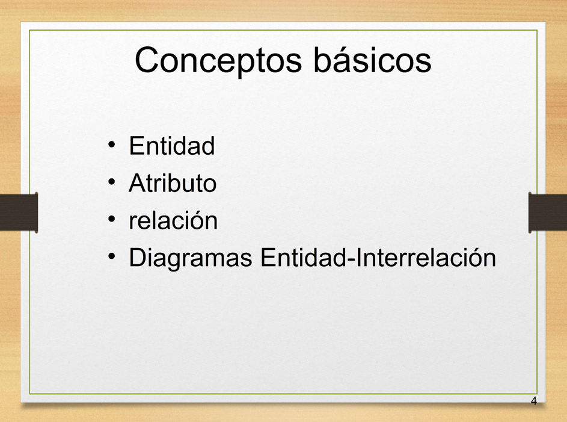
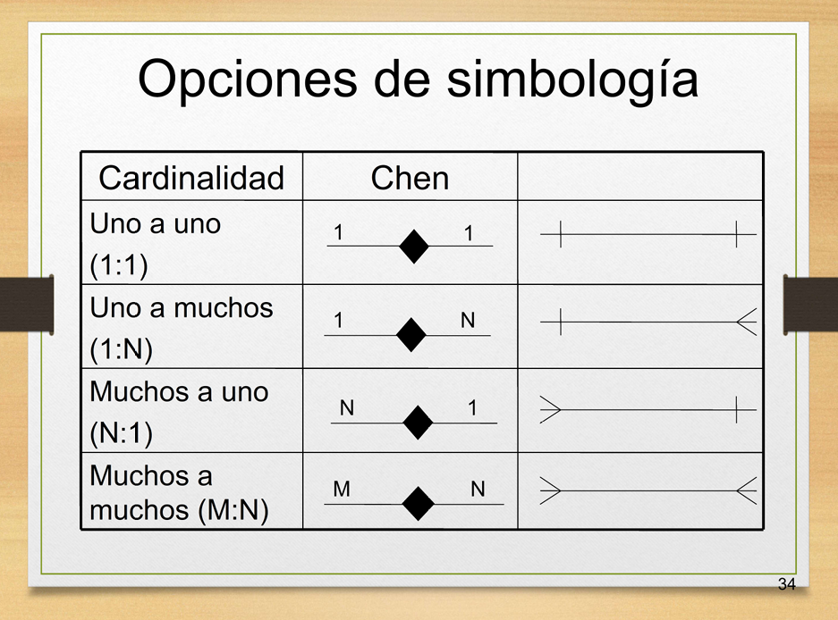
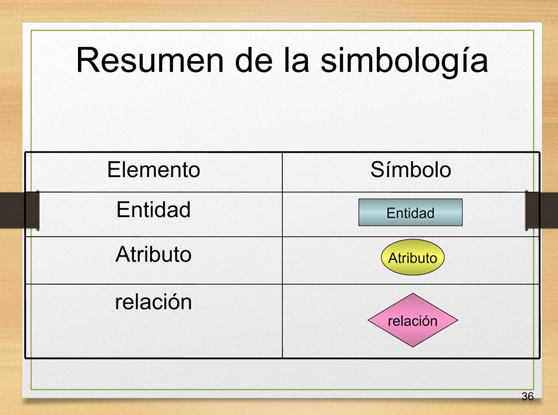
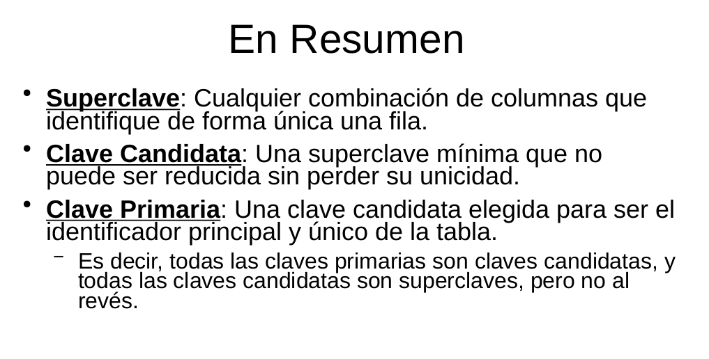

Gestión de Bases de Datos
Modelo E-R, Claves y Cardinalidades
Segunda actividad realizada en la asignatura de Gestión de Bases de Datos.
Información
Asignatura: Gestión de Bases de Datos
Tipo: Modelo Entidad-Relación
Estado: terminado
Objetivo
Comprender el modelo Entidad-Relación (E/R) como herramienta fundamental para el diseño conceptual de bases de datos, identificando correctamente las entidades, los atributos y las relaciones, así como los distintos tipos de claves (clave candidata, clave primaria, clave alternativa, superclave y clave ajena) que permiten identificar de forma única cada registro dentro de una base de datos.
Contenido
Modelo Entidad-Relación
Estudio del modelo Entidad-Relación como técnica de diseño conceptual de bases de datos. Se analizan los elementos que lo componen: entidades, atributos, relaciones, cardinalidad y participación, así como su representación gráfica mediante diagramas E/R.
Entidades y atributos
Diferenciación entre entidades fuertes y débiles, y clasificación de los atributos según su naturaleza: simples y compuestos, mono-valuados y multi-valuados, obligatorios y opcionales, y atributos derivados.
Claves y superclaves
Estudio de los distintos tipos de claves que permiten identificar de forma unívoca los registros de una entidad: superclave, clave candidata, clave primaria, clave alternativa y clave ajena o foránea. Se analiza cómo seleccionar adecuadamente la clave primaria de una tabla y qué implicaciones tiene sobre la integridad de los datos.
Relaciones y cardinalidad
Análisis de las relaciones entre entidades y sus cardinalidades (1:1, 1:N y N:M), así como de la participación total o parcial de las entidades en cada relación.
Lo que he aprendido
He aprendido a diseñar el modelo conceptual de una base de datos utilizando el modelo Entidad-Relación, identificando correctamente las entidades, sus atributos y las relaciones que existen entre ellas. También he comprendido la importancia de elegir una buena clave primaria para identificar de forma única cada registro, y he diferenciado entre conceptos similares pero distintos, como superclave, clave candidata, clave primaria, clave alternativa y clave ajena. Además, he practicado la representación de diagramas E/R con sus cardinalidades, lo que me ha ayudado a entender cómo se traduce un diseño conceptual a un modelo relacional.
Evidencias








Documentación ampliada
Actividad 01
📄 Abrir PDF 01 en una pestaña nueva